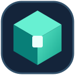

Witaj w PyCraft
Wybierz instancję i przygotuj się do gry.
▦
Minecraft JavaTwoja kolejna przygoda
3.0PROFILEInstancjeMODSModrinthPACKSModpacki
URUCHOM GRĘ →

PyCraft.PyCraft Launcher to autorski projekt rozwijany z myślą o wygodnym zarządzaniu Minecraft Java, instancjami i modyfikacjami.
Wybierz instancję i przygotuj się do gry.
PyCraft rozwijany jest jako wygodne miejsce do organizowania Minecrafta i dodatków.
Oddzielne konfiguracje Minecraft Java, aby łatwiej organizować wersje i profile.
01 / SETUPWyszukiwanie projektów i dodatków z ekosystemu Modrinth.
02 / MODSIntegracja z katalogiem CurseForge. Wymaga własnego klucza API.
03 / LIBRARYImport paczek i łatwiejsze przenoszenie zestawów modyfikacji.
04 / PACKSAutorska identyfikacja PyCraft i interfejs rozwijany z myślą o czytelności.
05 / DESIGNNiezależny projekt hobbystyczny, którego kod można przeglądać na GitHubie.
06 / OPEN CODEOd pierwszego prototypu do bardziej rozbudowanego launchera.
Pierwotna wersja projektu. Punkt wyjścia dla dalszych eksperymentów z launcherem i zarządzaniem grą.
Zobacz kod na GitHubie ↗Odświeżony interfejs, własne logo, rozszerzone funkcje oraz integracje z katalogami modyfikacji.
Zobacz kod na GitHubie ↗Repozytorium udostępnia obecnie kod źródłowy Python. Gotowy instalator EXE nie jest jeszcze publikowany jako oficjalne wydanie.
PyCraft Launcher to niezależny projekt rozwijany przez Jakuba. Celem jest stworzenie przejrzystego narzędzia do uruchamiania Minecraft Java i zarządzania dodatkami — bez udawania, że wszystko jest już gotowe.
Przejdź do GitHuba ↗Kod projektu jest udostępniany na GitHubie. Sprawdź repozytorium, aby poznać aktualny stan projektu.
Obecnie publikowane są pliki Python. Gotowy instalator powinien pojawić się po przygotowaniu i przetestowaniu wydania.
Nie. To niezależny projekt, niepowiązany z Mojang ani Microsoft.
Zajrzyj do kodu, sprawdź aktualne wersje i obserwuj rozwój projektu.
Otwórz repozytorium ↗